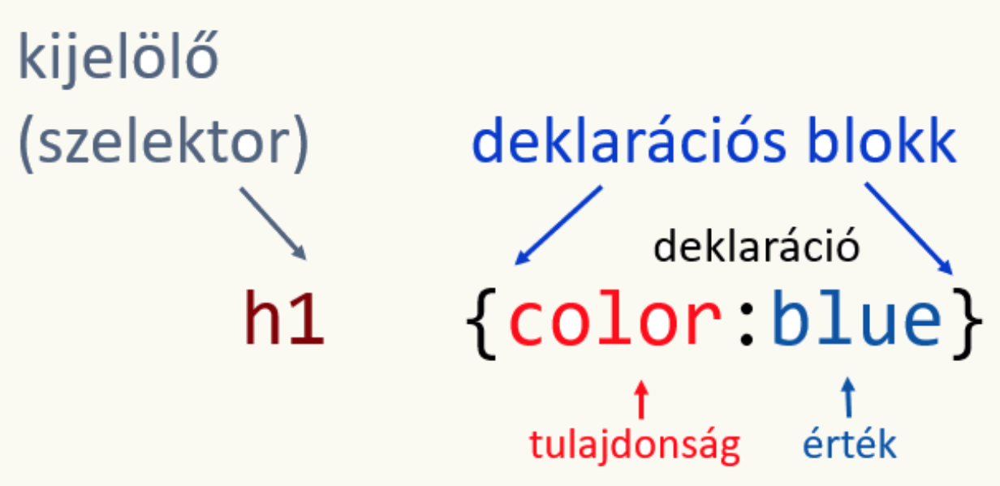
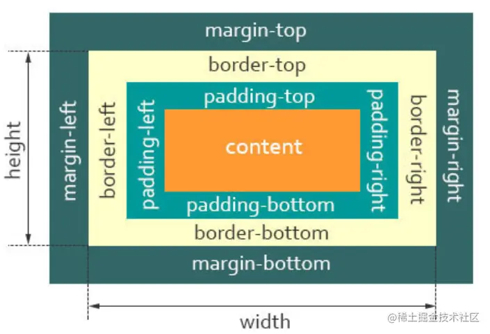

A weblap tartalmának elkészítéséhez szükséges címkéket (tageket) a HTML5 szabvány szerinti alapstruktúrában kell elhelyezni, amely a következő:
<!DOCTYPE html>
<html lang="hu">
<head>
<meta charset="utf-8">
<title></title>
</head>
<body>
</body>
</html>
Az első sor <!DOCTYPE html> tartalmazza a dokumentumtípust, amely megadja, hogy melyik szabvány szerint írja le a tartalmat – jelen esetben a HTML5 szabvány szerint.
A <html lang="hu"> tag jelzi, hogy HTML-dokumentumról van szó, a lang attribútumban pedig az oldal nyelvét kell megadni (pl. hu magyar, en angol).
A HTML-címkék többségét kötelező lezárni zárócímkével – ezeket páros tageknek nevezzük. Léteznek azonban páratlan vagy üres tagek is, amelyeknek nincs zárópárjuk (pl. <br>).
A teljes dokumentum a <html> tagben helyezkedik el, két fő részre tagolva:
<head>): Beállítások, mint például karakterkódolás (pl. <meta charset="utf-8">), cím (<title>) stb.<body>): A tényleges tartalom (címsorok, szövegek, képek, videók stb.).
A HTML-kódban megjegyzéseket lehet elhelyezni a <!-- és --> jelek között. Ezek nem jelennek meg a böngészőben.
A kész HTML-kódot .html kiterjesztéssel kell elmenteni. A kezdőlapot minden esetben index.html néven mentsük el, mivel ez a böngészők és szerverek által alapértelmezett belépési pontként szolgál.
További kényelmi funkció lehet az úgynevezett emmet rövidítések használatának támogatása, ami gyakorlatilag egy automatikus kódkiegészítést jelent. Rövid kódok begépelésével akár nagyon hosszú kódot is előállíthat, ami hatékonnyá teszi a munkáját.
<b> – félkövér betű (megjelenítési cél, nem szemantikus)<strong> – fontos, erőteljesen kiemelt szöveg<i> – dőlt betű (megjelenítés céljára)<em> – hangsúlyos dőlt szöveg (szemantikus kiemelés)A <p> tag bekezdést jelöl. Minden új gondolatot, témát ezzel célszerű elválasztani.
A címsor tagek <h1> és <h6> között helyezkednek el. A <h1> a legnagyobb szintű cím, míg a <h6> a legkisebb.
<h1>Főcím</h1> →
<h2>Alcím</h2> →
Kétféle lista típust különböztetünk meg:
<ul>
<li>Első elem</li>
<li>Második elem</li>
</ul>
<ol>
<li>Első lépés</li>
<li>Második lépés</li>
</ol>
A HTML-ben a képek beszúrásához az <img> elemet használjuk, amely önzáró (páratlan) tag, nincs zárócíme.
Legfontosabb attribútumai:
src: a kép elérési útja vagy URL-jealt: alternatív szöveg, amely megjelenik, ha a kép nem tölt be, és segíti a képernyőolvasókatwidth, height: a kép szélessége és magassága pixelben vagy százalékban- azonban a modern webfejlesztésben általában ajánlott ezeket a méretezéseket külön CSS stíluslapban kezelni
title: rámutatáskor megjelenő kiegészítő szövegPélda:
<img src="kep.jpg" alt="Tájkép a hegyekben" width="400" height="300">A hivatkozások létrehozásához az <a> taget használjuk, amelynek kötelező attribútuma a href.
Alapvető használat:
<a href="https://www.pelda.hu">Látogasd meg a weboldalt</a>Fontos attribútumok:
href: a cél URL vagy fájl elérési útjatarget: megadja, hogy a hivatkozás új lapon (_blank) vagy ugyanazon a lapon (_self) nyíljon megPélda új lapon nyíló hivatkozásra:
<a href="https://www.pelda.hu" target="_blank">Nyisd meg új lapon</a>Oldalon belüli hivatkozások (horgonylinkek) segítségével egy adott oldalrészre ugrhatunk.
id attribútumot a cél elemnek.href="#id" formában.Példa:
<h2 id="szakasz1">1. szakasz</h2>
<a href="#szakasz1">Ugrás az 1. szakaszhoz</a>| Elem | HTML tag | Jellemzők |
|---|---|---|
| Kép | <img> |
Önzáró tag, egyszerű használat, nincs zárótag. |
| Videó | <video> |
Zárópárral rendelkezik, lejátszásvezérlőkkel, több forrás megadható. |
| Hang | <audio> |
Hasonló a videóhoz, hangállományok lejátszására szolgál. |
Hangot nagyon hasonló módon illeszthet be az oldalra, mint videót. Ehhez az <audio> taget kell használnia, amely képes lejátszani a hangfájlt a böngészőben. A legelterjedtebb és legjobban támogatott formátum az MP3, így célszerű azt használni.
A forrásfájlt a <source> tag segítségével adhatjuk meg. Fontos a type="audio/mpeg" paraméter megadása is.
<audio controls>
<source src="hang.mp3" type="audio/mpeg">
</audio>
Videót a <video> tag segítségével szúrhatunk be. A videók esetén az MP4 formátum ajánlott, mivel ez szintén széles körű támogatottsággal rendelkezik. A controls attribútum lehetővé teszi a lejátszás, szünet, hangerő és egyéb funkciók elérését a felhasználó számára.
<video width="640" height="360" controls>
<source src="video.mp4" type="video/mp4">
A böngésző nem támogatja a videó lejátszását.
</video>
A HTML-ben a <table> elem segítségével hozhatunk létre táblázatokat. Egy táblázat jellemzően sorokból (<tr>) és oszlopokból, azaz cellákból áll. A fejléc cellákhoz a <th> elemet, míg az adatokhoz a <td> elemet használjuk.
A <caption> elem a táblázat címsorát vagy feliratát jeleníti meg, jellemzően a táblázat felett. Ez különösen hasznos a tartalom jobb értelmezéséhez.
<table> – a táblázatot definiálja.<caption> – a táblázat felirata.<tr> – egy sort jelöl a táblázatban.<th> – fejléc cella, jellemzően félkövér és középre igazított.<td> – normál adatcella.Az alábbi példában egy egyszerű, 4 oszlopos táblázat látható néhány mintaadattal:
<table border="1">
<caption>Felhasználók adatai</caption>
<tr>
<th>Név</th>
<th>Kor</th>
<th>Város</th>
<th>Email</th>
</tr>
<tr>
<td>János</td>
<td>25</td>
<td>Budapest</td>
<td>janos@example.com</td>
</tr>
<tr>
<td>Anna</td>
<td>30</td>
<td>Szeged</td>
<td>anna@example.com</td>
</tr>
<tr>
<td>Béla</td>
<td>28</td>
<td>Debrecen</td>
<td>bela@example.com</td>
</tr>
</table>
| Név | Kor | Város | |
|---|---|---|---|
| János | 25 | Budapest | janos@example.com |
| Anna | 30 | Szeged | anna@example.com |
| Béla | 28 | Debrecen | bela@example.com |
A border="1" attribútum egyszerű keretet ad a táblázatnak. Modern webfejlesztésben azonban inkább CSS-t használunk a megjelenés testreszabására.
A honlap arculatának megadásához a CSS- (Cascading Style Sheets, magyarul: lépcsőzetes stíluslapok) szabványt kell használnia
A CSS-szabály segítségével megadhatja, hogy az egyes elemek milyen módon legyenek formázva.Tehát egy olyan utasítás, amely meghatározza, hogyan jelenjen meg egy adott HTML elem.
A CSS-szabály két részből áll. Az első rész a kijelölő, vagyis a szelektor. Ahogy a neve is mutatja, segítségével kijelölheti azokat az elemeket, amelyeket formázni szeretne.
A második rész a deklarációs blokk, amely kapcsos zárójelek között helyezkedik el. A deklarációs blokkban deklarációkat helyezhet el, amelyek tulajdonságokat és azok értékeit tartalmazzák. A tulajdonságot kettősponttal kell elválasztani az értéktől.
Amikor a deklarációs blokk több deklarációt tartalmaz, a deklarációk végére pontosvesszőt kell tenni. Ez alól kivétel az utolsó deklaráció. Az alábbi kódban erre láthat példát:
A CSS segítségével a szöveg megjelenését részletesen szabályozhatjuk. Az alábbiakban néhány gyakran használt betűformázó tulajdonságot mutatunk be:
color: A szöveg színének beállítása. Például: color: #333333;font-size: A betűméret meghatározása, például pixelben vagy relatív mértékegységekben (font-size: 16px;, font-size: 1.2em;)font-family: A betűtípus megadása, például: font-family: Arial, sans-serif;font-weight: A betű vastagságának szabályozása, például normal, bold vagy numerikus értékekkel (font-weight: 700;)font-style: A betű stílusa, például normal, italic vagy obliquetext-decoration: Szöveg dekorációk, például underline (aláhúzás), line-through (áthúzás) vagy nonetext-align: A szöveg igazítása, például left, center, right vagy justifyA bekezdések megjelenését is számos tulajdonsággal lehet szabályozni:
text-align: A bekezdés szövegének igazítása (balra, középre, jobbra, sorkizárt).line-height: Sortávolság, amely meghatározza a sorok közötti távolságot (line-height: 1.5; például 1,5-szeres sortávolság).text-indent: A bekezdés első sorának behúzása, például: text-indent: 30px;margin: Külső margó, amely a bekezdés és más elemek közötti térközt szabályozza.padding: Belső margó, amely a bekezdés tartalma és a határa közötti távolság.class) és azonosító (id) kijelölők a CSS-benA CSS-ben az elemek célzott formázásához használhatjuk az osztály és azonosító kijelölőket.
class).osztalynev { /* stílusok */ }<p class="kiemelt">Ez egy kiemelt bekezdés.</p>id)#azonosito { /* stílusok */ }<div id="fejlec">Ez az oldal fejléc része.</div>A CSS stílusokat többféleképpen is csatolhatjuk egy HTML dokumentumhoz:
.css fájl csatolása a <head> szekcióban:
<link rel="stylesheet" href="styles.css"><head> részben:
<style>
body {
background-color: #fafafa;
}
</style>style attribútumban:
<p style="color: blue; font-weight: bold;">Kék és félkövér szöveg.</p>A honlapot alkotó elemek a böngészőprogramban úgynevezett dobozokban helyezkednek el. A legbelső dobozban a tartalom (például szöveg, kép, videó) helyezkedik el. Amikor egy elemnek megadjuk a szélességét (width), akkor azzal a valójában a tartalom szélességét adjuk meg. Ugyanez igaz a magasságra (height) is, vagyis az is a tartalomra vonatkozik. A belső dobozt körülvevő doboz a kitöltés, vagy más néven belső margó (padding), amely a tartalom és a szegély (border) között helyezkedik el. A szegély és a többi elem közötti térköz pedig a margó (margin). Az értékek mind a négy oldalra (felső, jobb, alsó, bal) egyedileg beállíthatók.
Minden HTML elem egy dobozként jelenik meg, amely négy fő részből áll:
A dobozmodell struktúráját az alábbi ábra szemlélteti:

div {
width: 200px;
padding: 20px;
border: 5px solid black;
margin: 15px;
}
Ebben a példában az elem tényleges teljes szélessége a következőképpen számítható ki:
Teljes szélesség = margin (15px * 2) + border (5px * 2) + padding (20px * 2) + tartalom szélessége (200px)
Azaz összesen: 15*2 + 5*2 + 20*2 + 200 = 300px.
box-sizing tulajdonság
A box-sizing CSS tulajdonság lehetővé teszi a dobozmodell viselkedésének megváltoztatását. Alapértelmezés szerint a content-box érték érvényesül, amely szerint a width és height csak a tartalom méretét határozza meg.
Ha beállítjuk a box-sizing: border-box; értéket, akkor a megadott width (pl. 200px) már a teljes doboz szélességére vonatkozik, azaz a tartalom + padding + border együtt nem haladja meg a 200px-t. Ebben az esetben a padding és border beleértendő a megadott szélességbe, tehát a tartalom szélessége automatikusan kisebb lesz, hogy az egész doboz pontosan 200px szélességű legyen.
div {
box-sizing: border-box;
width: 200px;
padding: 20px;
border: 5px solid black;
margin: 15px;
}
Tehát ebben az esetben az elem teljes szélessége 200px lesz, mivel a padding és border ezen belül kerülnek elszámolásra.